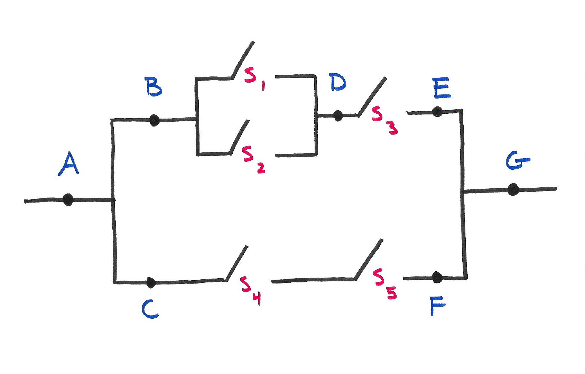

Problem Set 2
Due Thursday February 6 at 12PM
Problem 0
Recommend some music for us to listen to while we grade this.
Problem 1
Seven balls are randomly withdrawn from an urn that contains 12 red, 16 blue, and 18 green balls. Find the probability that
- 3 red, 2 blue, and 2 green balls are withdrawn;
- at least 2 red balls are withdrawn;
- all withdrawn balls are the same color;
- either exactly 3 red balls or exactly 3 blue balls are withdrawn.
Problem 2
Suppose you are dealt six cards from a well-shuffled, standard deck of 52.
- What is the probability of getting 3 of one rank and 3 of another?
- What is the probability of getting 4 of one rank and 2 of another?
- What is the probability of getting 3 aces and 3 of another rank?
- What is the probability of getting 4 of one rank and 2 aces?
- What is the probability that all 6 cards are in the same suit?
- What is the probability that all 6 cards are consecutive (ie a hand with 3 hearts, 4 spades, 5 spades, 6 clubs, 7 hearts, and the 8 diamonds)? Assume that the ace can only be the high card;
- What is the answer to the previous question if we allow the ace to be either high or low?
- What is the probability of receiving the ace, king, queen, jack, 10 and 9 all in hearts?
Problem 3
In an election, candidate \(A\) received 2,656 votes, and candidate \(B\) received 2,594 votes. So \(A\) won. Then it was discovered that 136 ineligible people had voted. A judge ruled that the election should be redone from scratch. Candidate \(A\) appealed this ruling, arguing that if the 136 ineligible votes were randomly reallocated to the two candidates, the probability that the election results change would be extremely small.
- What is the probability that \(m\) of the 136 ineligible votes were cast for candidate \(A\)? Treat \(m\) as an arbitrary constant in \(\{0,\,1,\,2,\,...,\,136\}\);
- For what values of \(m\) would the results change?
- What is the probability that the results would change?
Problem 4
Let \(A\) and \(B\) be independent events. Prove that \(A^c\) and \(B^c\) are independent events.
Problem 5
Let \(S\) be a sample space and \(B\subseteq S\) be an event with \(P(B)>0\). Show that the function \(G(A)=P(A\,|\, B)\) is a probability measure on \(S\). That is, show that \(G\) satisfies the axioms: total measure 1, nonegativity, countable additivity.
Problem 6
Assume that \(P(A)>0\) and prove that
\[ P(A\cap B\,|\, A)\geq P(A\cap B\,|\, A\cup B). \]
Problem 7
An encryption algorithm generates a seed value \(z\) in the following way:
A binary operator is chosen at random from \(\{+,\,\cdot\}\);
Two distinct numbers \(x\) and \(y\) are chosen at random from the set \(\{1,\,2,\,...,\,9\}\) and the binary operation chosen above acts on \(x\) and \(y\) to produce \(z\).
- What is the probability that \(z\) is an even number?
- You notice that the algorithm generates an even \(z\) value. Given this, what is the probability that the \(+\) operator was used to generate it?
Problem 8
A pair of fair dice is rolled until a sum of either a 5 or a 7 appears. What is the probability that a 5 occurs first?
Problem 9

The figure above displays a circuit. Switch \(S_i\) closes with probability \(p_i\), and the switches close independently of one another. What is the probability that electricity can flow from \(A\) to \(G\)?
Problem 10
Consider the “extended” Monty Hall problem:
- there are \(n\) doors. A car is behind one door and goats are behind the other \(n-1\) doors;
- the contestant selects one door. Instead of opening that door, the game show host then opens \(0 \leq k \leq n-2\) of the remaining doors to reveal \(k\) goats. Note that \(k\) must not exceed \(n-2\), since the host does not open your door or the door with the car;
- the contestant is given an option: either they can stay with their originally chosen door or they can switch to one of the other remaining door that the host did not open.
What is the probability that switching your choice of door results in a win?
Submission
You are free to compose your solutions for this problem set however you wish (scan or photograph written work, handwriting capture on a tablet device, LaTeX, Quarto, whatever) as long as the final product is a single PDF file. You must upload this to Gradescope and mark the pages associated with each problem.